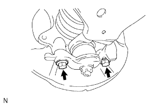
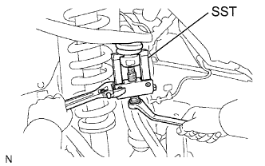

STEERING KNUCKLE > REMOVAL |
| 1. REMOVE FRONT SPEED SENSOR LH |
Remove the bolt and speed sensor from the knuckle.
| 2. REMOVE FRONT AXLE HUB SUB-ASSEMBLY LH |
Remove the front axle hub (Click here).
| 3. DISCONNECT TIE ROD END SUB-ASSEMBLY LH |
 |
Using SST, disconnect the tie rod end assembly.
| 4. DISCONNECT FRONT LOWER BALL JOINT ATTACHMENT LH |
|  |
Remove the 2 bolts and disconnect the front lower ball joint attachment from the axle.
| 5. REMOVE STEERING KNUCKLE LH |
Support the front suspension lower arm LH with a jack.
Remove the clip and nut.
|  |
Using SST, disconnect the upper ball joint from the steering knuckle.
Remove the steering knuckle.